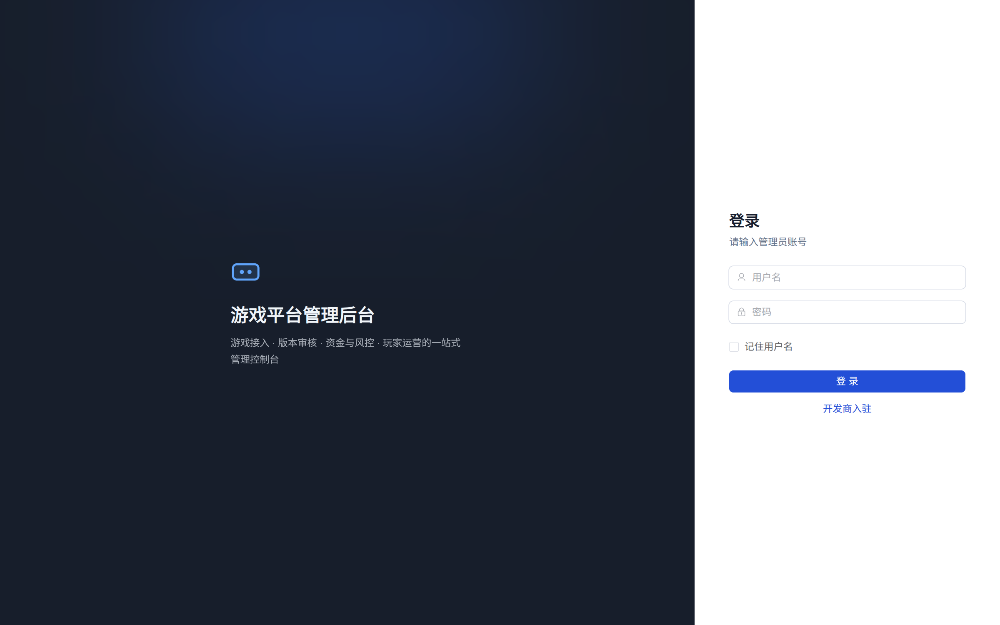
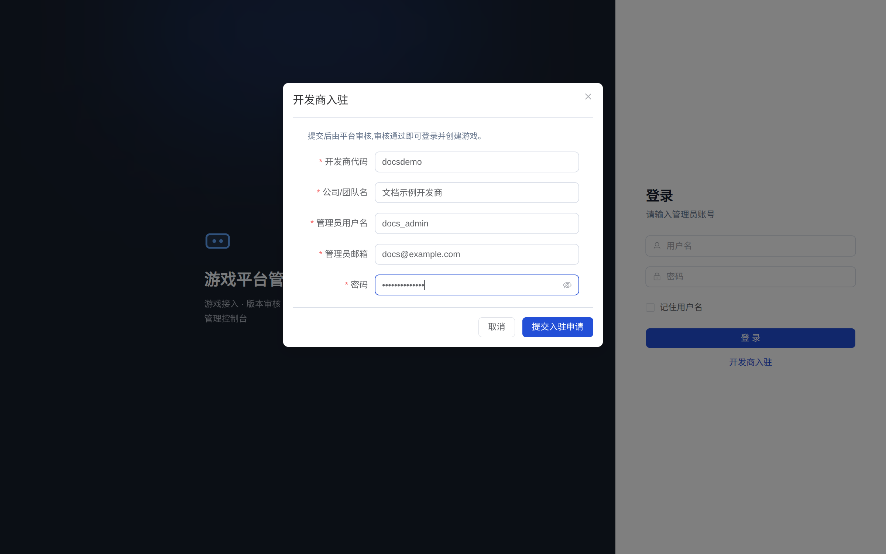
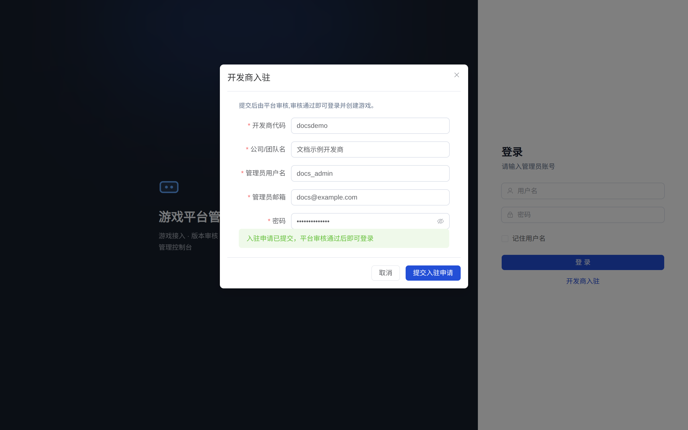
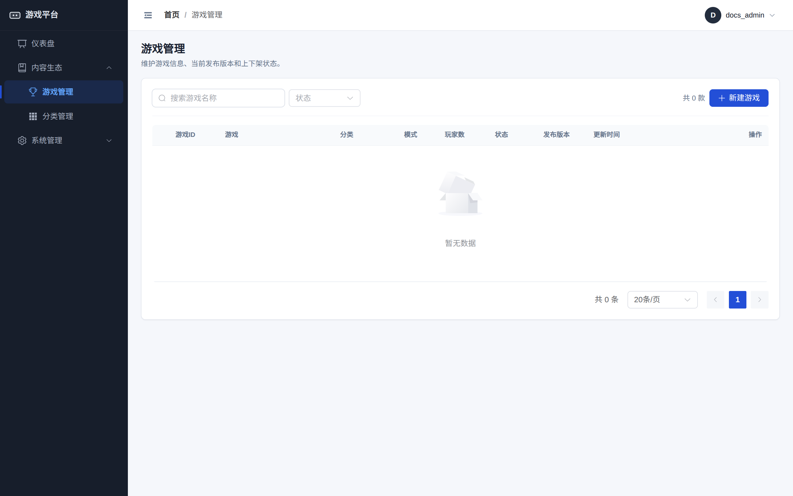
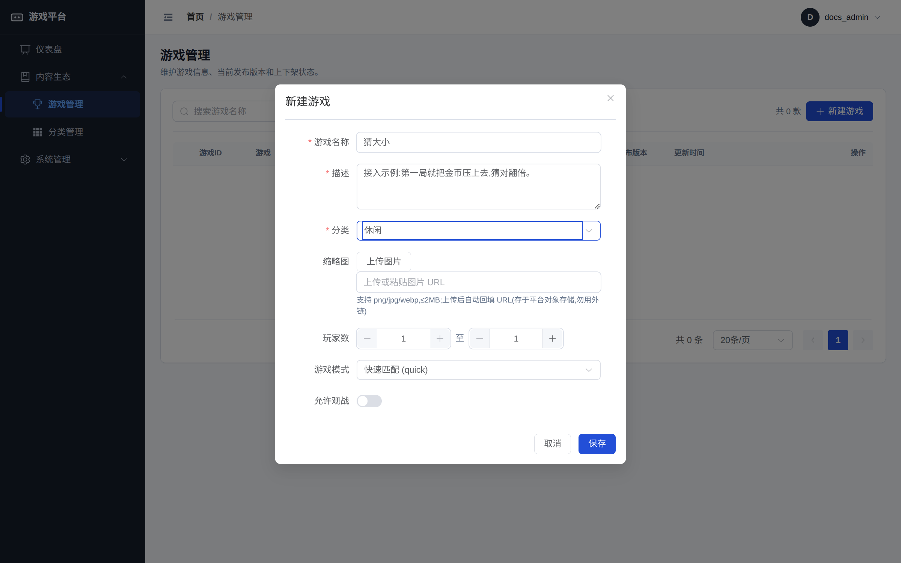
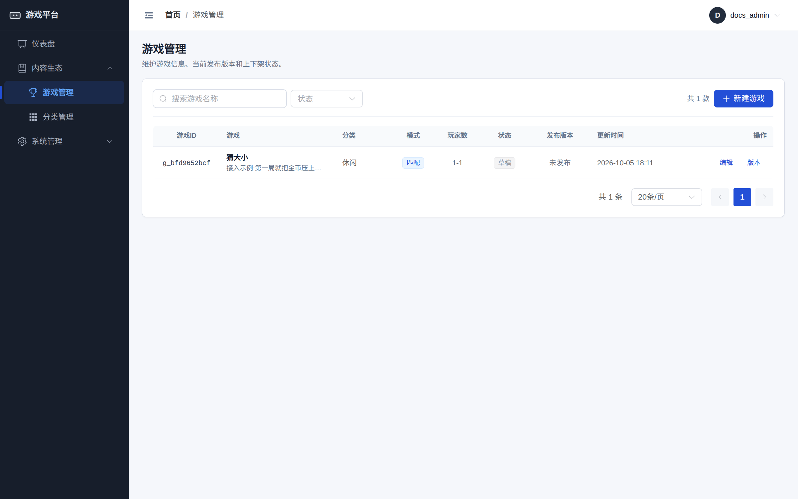

平台简介
在线游戏平台是一个面向网页游戏的联机游戏平台。玩家在浏览器中即可完成游戏发现、开局与对战,无需下载客户端。游戏开发商按平台规范开发一次,即可获得游戏分发、联机对战、匹配与结算能力。
平台能力
- 游戏即点即玩:游戏以 Web 静态包形式托管,在大厅点击卡片即可进入,支持分类筛选、搜索、收藏与最近游玩。
- 实时联机:平台统一提供 WebSocket 网关、会话管理、断线重连与在线状态,游戏只需专注玩法逻辑。
- 两种开局方式:quick 模式由平台自动匹配玩家,人数达标后自动开局;room 模式提供房间码,适合好友组局。
- 平台托管结算:玩家金币余额由平台托管,游戏按回合发起扣款与奖励,结算原子完成并全程留痕。
- 公平随机:内置 commit-reveal 公平随机协议,玩家可独立验证每局随机结果。
- 版本化内容审核:游戏前端包与逻辑包分别提审,审核通过即发布,支持版本回滚。
- 运营支撑:管理后台覆盖开发商管理、玩家管理、财务、内容运营、数据看板与客服工单。
角色与入口
| 角色 | 入口 | 职责 |
|---|---|---|
| 玩家 | game.zihua-chen.cn | 注册账号,发现并游玩游戏,管理钱包与个人设置 |
| 开发商 | game.zihua-chen.cn/admin | 开发游戏并提审发布,管理名下游戏 |
| 平台运营 | game.zihua-chen.cn/admin | 内容审核、财务管理、内容运营、数据看板与客服支持 |
技术栈
后端基于 Go,依赖 PostgreSQL 与 Redis,由 admin、lobby、game-api 三个服务组成,另含一个 S3 兼容对象存储(开发环境内置,生产复用独立存储)。前端为 Vue 3 单页应用,玩家大厅使用 Tailwind CSS,管理后台使用 Element Plus。游戏逻辑运行在 goja 沙箱中,由平台托管执行。游戏前端包存储在 S3 兼容对象存储上。通信采用 REST 与 WebSocket,平台为游戏两端提供 TypeScript SDK。
当前版本边界
以下能力当前版本尚未提供,接入与使用时请据此规划:
- 无独立 Sandbox 环境:线上平台即为验证环境,支付为沙箱模拟、金币为虚拟物品。
- 提现通道未开放:金币不可兑回法币。
- 游戏逻辑无外部网络能力:不支持需要游戏自建服务器或访问第三方 API 的玩法。
- 平台级投注上下限未实现:单注限额由各游戏逻辑自行约束。
- 原生客户端不支持:平台只承载浏览器内运行的游戏。
技术支持
接入或使用过程中遇到问题,可通过以下方式联系平台技术支持:
- QQ:597291437
- 邮箱:597291437@qq.com
使用声明
平台金币为虚拟物品,仅用于学习研究与技术演示,不涉及真实资金交易。充值支付为沙箱模拟流程,金币不可兑回。平台提供充值限额与自我排除等健康游戏工具,见合规与账户安全。
系统架构
服务组成
| 组件 | 说明 |
|---|---|
| 玩家大厅 | Vue 3 单页应用,提供游戏列表、搜索、收藏、游戏宿主、钱包与个人中心 |
| 管理后台 | Vue 3 单页应用,承载平台运营与开发商后台 |
| Admin API | 后台服务,负责管理员与开发商账号、游戏与版本审核、财务、内容运营 |
| Lobby API | 大厅服务,负责玩家注册登录、游戏列表、钱包、签到任务、通知与充值 |
| Game API | WebSocket 网关与游戏逻辑运行时,负责会话状态机、匹配、回合结算与公平随机 |
| PostgreSQL / Redis | 关系存储与缓存,Redis 同时承载实时余额推送 |
| 对象存储 | S3 兼容存储,托管审核通过的游戏前端包 |
身份体系
平台区分三类账号。玩家由大厅自助注册,注册即创建玩家账户与钱包,凭玩家令牌访问大厅与游戏服务。管理后台用户与玩家分属两个独立身份域,RBAC 权限体系只约束后台用户。开发商是后台侧账号,只能操作本开发商名下的游戏。
游戏托管模型
一款游戏由游戏前端与游戏逻辑两部分组成,均由开发商开发、平台托管运行。
- 游戏前端是标准 Web 静态资源,以 iframe 方式嵌入大厅页面运行。
- 游戏逻辑是一份 JavaScript 程序,提交到平台后由隔离运行时托管执行,负责全部权威玩法逻辑与结算。游戏逻辑不暴露任何网络接口,玩家无法绕过前端直接访问。
flowchart LR
subgraph BROWSER["玩家浏览器"]
L["平台大厅"] -- "iframe 嵌入" --> GF["游戏前端<br/>开发商静态页面"]
end
subgraph PLATFORM["平台"]
H["大厅宿主"] -- "postMessage<br/>连接配置与票据" --> GF
G["WebSocket 网关"] --> R["游戏逻辑运行时<br/>托管开发商代码"]
R -- "回合结算" --> W["钱包服务"]
S["静态资源托管<br/>存放游戏前端包"]
P["平台 API"]
end
GF -- "WebSocket 游戏事件" --> G
L -- "REST" --> P
DEV["开发商后台与 CI"] -- "提包、提审、查询" --> P
P -- "审核通过发布" --> S
P -- "审核通过发布" --> R
设计原则:
- 凭证不进游戏前端:游戏前端运行在不授予
allow-same-origin的 iframe 沙箱中,通过宿主协议向大厅索取一次性 WebSocket 票据;票据单次有效、30 秒过期,玩家长期凭证不会离开大厅。宿主按消息来源窗口校验 opaque-origin postMessage,Game API 仅在配置了游戏包来源时接受对应的Origin: nullWebSocket。 - 权威在服务端:影响玩法与资金的操作均由平台托管的游戏逻辑裁决,前端只负责表现。
- 资金平台托管:游戏逻辑只能通过平台回合接口发起扣款与奖励,结算原子完成并全程留痕。
对局链路
- 会话状态机为
created → waiting → ready → playing → finished,error 与 timeout 为终态,玩法动作仅在 playing 状态受理。 - quick 模式由匹配器按游戏自动池化玩家,人数达到 minPlayer 即自动开局。
- room 模式通过 REST 创建房间并获得 6 位房间码,其他玩家凭码加入等待室,房主满足人数后开局。
- 观战为会话级只读连接,需游戏声明允许。
资金链路
玩家钱包由余额与流水两部分组成,一切资金变动包裹在显式回合中,整回合原子提交、失败整体回滚。余额变更在事务提交后经 Redis 发布订阅广播,由网关实时推送到玩家的全部连接,游戏内余额显示无需轮询。充值遵循实名认证、下单、渠道回调、同事务入账的闭环,幂等键防止重复入账。
注册与登录
注册账号
进入大厅 game.zihua-chen.cn,点击右上角注册,填写以下信息:
| 字段 | 要求 |
|---|---|
| 用户名 | 必填,3–50 个字符,全局唯一 |
| 昵称 | 选填,最长 20 字符,游戏内展示名,留空时使用用户名 |
| 邮箱 | 必填,用于找回密码 |
| 密码 | 至少 6 位 |
注册即表示已知悉平台使用条款:本平台仅用于学习研究与技术演示,不涉及真实资金交易。注册成功后自动登录,并返回之前访问的页面。
登录
支持用户名加密码登录。未登录状态下点击游戏卡片、充值等入口,会先进入登录页,登录后自动返回。
找回密码
- 在登录页输入注册邮箱,获取 6 位重置码。重置码 10 分钟内有效,沙箱环境下由平台日志下发,可联系平台获取。
- 输入重置码与新密码完成重置。重置后所有设备需重新登录。
个人中心不提供改密码入口,修改密码统一通过找回密码流程完成。
注销账号
个人中心的账户与安全页提供注销入口,操作需输入登录密码确认。注销后账号不可恢复,交易流水按合规要求保留用于对账,注销成功后自动退出登录。
游戏大厅
大厅首页 game.zihua-chen.cn 是玩家发现游戏的主入口,页面自上而下分为以下区块:
| 区块 | 说明 |
|---|---|
| 公告条 | 展示平台公告,内容由运营配置,仅显示标题 |
| 轮播位 | 运营配置的推荐内容,自动轮换,悬停暂停,支持滑动与箭头切换,绑定游戏的轮播可一键进入 |
| 最近在玩 | 登录后展示近期游玩过的游戏,横向滑动,点击继续 |
| 我的收藏 | 登录后展示收藏的游戏 |
| 编辑推荐 | 运营配置的推荐位,点击进入对应游戏 |
| 分类筛选 | 全部与各分类标签,点击过滤下方游戏列表 |
| 游戏网格 | 全部上架游戏,加载中显示骨架屏,失败可重试 |
游戏卡片展示封面、分类角标与标题,悬停出现立即进入按钮,整卡可点击。未登录点击游戏会先进入登录页,登录后自动回到该游戏。
搜索
点击顶栏搜索入口或使用快捷键 Ctrl/⌘+K 打开全屏搜索。
- 输入即搜,最多返回 20 条结果,回车直达第一个结果。
- 无关键词时展示最近 8 条搜索历史与热门游戏入口,历史可一键清除。
- Esc 键先清空关键词,再次按下关闭搜索。
收藏与最近游玩
进入游戏页后可收藏或取消收藏。有游玩记录的游戏出现在首页最近在玩,点击封面直接回到游戏。
开始游戏
进入游戏页后,游戏以 iframe 方式嵌入运行。开局方式由游戏配置决定,分为 quick 与 room 两种。
quick 模式
点击游戏卡片直接进入,无需手动操作。平台自动将玩家加入该游戏的匹配队列,人数达到开局要求后自动开始对局。该模式适合对战与牌桌类玩法。
room 模式
进入游戏页先显示房间面板。
- 创建房间:房主获得 6 位房间码,可复制邀请链接发送给好友。此前有未开始的房间时会自动恢复。
- 加入房间:输入好友的房间码加入,房间码自动转为大写。
等待室展示房间号、状态、玩家数与玩家列表,房主带房主标记。人数满足开局要求后,房主可点击开始游戏,其余玩家等待即可,也可离开房间退出等待。对局开始后等待室收起,游戏画面接管。
对局中
- 余额显示在顶栏并实时更新。游戏内的余额变动由平台实时推送,无需刷新页面。
- 断线或刷新页面后重新进入游戏,平台会带回原对局并恢复局面。离席玩家的座位通常由游戏托管,归队后自动恢复操作。
- 支持观战的游戏可通过观战链接只读观看对局。
- 点击游戏内返回按钮回到大厅首页,直接关闭页面不影响对局状态。
充值
大厅顶栏点击充值进入充值页。充值前需完成实名认证,未实名时页面会先引导认证。
实名认证
填写真实姓名与身份证号提交。前端按国家标准校验证件号格式,通过后显示认证状态与证件尾号。身份信息仅用于合规校验,平台不以明文保存。
充值与到账
平台提供 6、30、98、198、328、648 元六档充值面额(以充值页实际展示为准),兑换比例为 1 元兑换 100 金币,到账实时推送。
- 选择档位并确认,生成订单,页面展示订单号与状态。
- 完成支付。当前支付渠道为沙箱模拟支付,不发生真实扣款。
- 支付成功后金币自动到账,顶栏余额即时刷新。
订单状态包括待支付、支付中、已到账、已失败、已过期与已退款。未完成支付的订单不会扣款,支付结果异常时可稍后在充值记录中查看。
充值记录
充值页下方展示最近 10 条充值记录,包含档位、时间、订单号、金额与状态。
金币为单向获取的虚拟物品,不可兑回,见合规与账户安全。
个人中心
顶栏点击用户名进入个人中心,包含资料、成长、任务、记录与安全设置。
基本资料
昵称可修改,1–20 个字符,保存后游戏内下一局生效。头像为固定占位,暂不支持上传。
成长与福利
- 等级体系:游玩积累经验,等级与进度条随经验提升。
- 每日签到:7 天循环,每日奖励金币,当日签到当日领取。
- 每日任务:完成任务目标后领取金币奖励,页面显示完成进度。
统计与记录
- 统计:金币余额、交易笔数与游戏场次。
- 对局记录:最近 10 条,含游戏名、时间、胜平负结果与分数变化。
- 金币流水:最近 50 条,含描述、时间与金额方向。
账户与安全
| 功能 | 说明 |
|---|---|
| 当日充值限额 | 自主设定每日充值上限,只能下调 |
| 自我排除冷静期 | 可选 3、7、30、180 天,排除期内无法充值,也不能自行解除 |
| 账号注销 | 输入登录密码确认,注销后不可恢复,流水保留用于对账 |
通知中心
顶栏铃铛进入通知中心,交易与系统消息在此展示。
- 每页最多 50 条,展示标题、正文与时间。
- 未读消息带未读标记,点击即标记已读,也可一键全部已读。
- 顶栏铃铛显示未读数量,超过 99 显示为 99+。
合规与账户安全
使用范围
平台金币为虚拟物品,充值支付为沙箱模拟流程,不发生真实扣款,金币不可兑回法币,提现通道未开放。平台页面长期展示适度游戏、理性消费提示。
健康游戏工具
个人中心的账户与安全页提供两项自主工具。
- 当日充值限额:设定每日充值上限,一经下调不可自行调高。
- 自我排除冷静期:可选 3、7、30、180 天,排除期内无法充值,期内不能自行解除。
账号安全
- 密码找回仅通过注册邮箱的重置码流程,重置后所有设备强制下线。
- 玩家凭证不会下发到任何游戏页面。游戏只能获取一次性 WebSocket 票据,票据单次有效且 30 秒过期。
- 注销账号需密码二次确认,注销后流水按合规要求保留用于对账。
管理后台概览
管理后台位于 game.zihua-chen.cn/admin/,供平台运营与开发商使用。账号由平台创建或经开发商自助注册,登录后按角色与权限控制可见页面与接口。开发商账号只能管理本开发商名下的游戏,越权返回 403。
页面一览
| 分组 | 页面 | 用途 |
|---|---|---|
| 概览 | 仪表盘 | 平台运行概览与待处理事项 |
| 内容生态 | 开发商管理 | 开发商资料、账号状态与旗下资源 |
| 内容生态 | 分类管理 | 大厅展示分类与游戏归属 |
| 内容生态 | 游戏管理 | 游戏信息、缩略图、联机参数与上下架状态 |
| 内容生态 | 游戏版本 | 按游戏提交版本:前端包与逻辑包上传或继承、申报 RTP 与抽成 |
| 内容生态 | 游戏审核 | 审查开发商提交的版本,通过即发布 |
| 运营中心 | 内容运营 | 大厅轮播、公告与推荐位维护 |
| 运营中心 | 券管理 | 金币券与补签卡的批次发放和启停 |
| 玩家与财务 | 玩家管理 | 玩家账户、余额、流水查询与处置 |
| 玩家与财务 | 财务中心 | 充值订单、渠道对账、发放批次、提现审核与风控工作台 |
| 玩家与财务 | 管理员账号 | 后台账号、角色授权、禁用与密码重置 |
| 数据与支持 | 数据看板 | 平台总览、转化漏斗、留存与游戏健康度 |
| 数据与支持 | 客服工单 | 玩家工单受理、回复、补偿与回合回放仲裁 |
| 系统管理 | 菜单管理 | 配置后台导航结构与入口排序 |
| 系统管理 | 权限管理 | 按菜单维护接口权限点 |
| 系统管理 | 角色管理 | 管理角色并分配权限 |
| 系统管理 | 审计日志 | 后台关键操作追踪 |
角色说明
- 平台运营:可见全部页面。内容审核、玩家管理、财务、风控与系统管理属平台职能,开发商账号无权限。
- 开发商:登录后仅可见与自身相关的页面,典型工作流是 游戏管理建游戏 → 游戏版本提包提审 → 版本迭代,详见开发商接入指南。
接入总览
本指南面向游戏开发商,说明如何将一款游戏接入本平台,并获得分发、联机、匹配与结算能力。接入完成后,玩家在大厅内即可发现、进入并游玩你的游戏。
建议阅读顺序:先读本章建立整体认知,再按快速开始跑通第一个版本,其余章节按需查阅。
文档约定
- 必须:强制要求,不满足将无法通过审核或无法正常运行。
- 禁止:强制禁止,违反将导致提审被拒或运行被终止。
- 建议:推荐做法,平台以此为准设计,偏离需自行承担兼容风险。
平台能力
| 能力 | 说明 |
|---|---|
| 游戏分发 | 游戏上架后进入大厅游戏列表,支持分类、搜索、收藏与最近游玩 |
| 联机对战 | 平台提供 WebSocket 网关、会话管理、断线重连与在线状态 |
| 匹配系统 | quick 模式下平台自动撮合玩家并开局 |
| 房间系统 | room 模式下平台提供房间创建、房间码加入与等待室长轮询 |
| 观战 | 会话级只读观战,需游戏声明允许 |
| 托管结算 | 平台托管玩家余额,提供回合级原子结算、流水审计与实时余额推送 |
| 对局记录 | 游戏上报胜负结果后,玩家可在个人中心查看对局记录 |
| 公平随机 | 提供 commit-reveal 公平随机协议,玩家可独立验证随机结果 |
| 内容审核 | 前端包与游戏逻辑包版本化提审,审核通过即发布,支持版本回滚 |
你要开发什么
接入本平台不需要自建服务器、域名与运维。一款游戏由两部分产物组成,均由你开发、平台托管运行:
| 产物 | 形态 | 上限 |
|---|---|---|
| 游戏逻辑包 | 单文件 JavaScript bundle(IIFE),承载全部权威玩法与结算 | 512 KiB |
| 游戏前端包 | 纯静态 Web 资源 zip,根目录含 index.html,以 iframe 嵌入大厅 | zip ≤ 25 MB |
职责划分:
| 由你负责 | 由平台负责 |
|---|---|
| 玩法规则与游戏逻辑 | 账号注册登录与身份凭证 |
| 前端界面与交互表现 | 钱包、余额、流水与回合结算 |
| 回合内扣款与奖励的调用时机 | WebSocket 网关、会话状态机、断线重连 |
| 游戏自定义事件的定义与处理 | 匹配、房间、观战 |
| 对局胜负结果上报 | 公平随机基础设施 |
| 版本迭代与提审 | 内容审核、发布、回滚与分发 |
游戏逻辑运行在平台的隔离运行时中,不暴露任何网络接口,玩家无法绕过前端直接访问;游戏前端永远不持有玩家长期凭证,只通过一次性票据连接。
适合什么游戏
| 评估 | 类型 | 说明 |
|---|---|---|
| 官方支持 | 牌桌、棋类、老虎机、休闲对战等回合制或会话制玩法 | 平台的会话模型(最长 2 小时)与回合结算即为这类玩法设计 |
| 可能接入 | 其他能满足运行约束的浏览器玩法 | 逻辑包 ≤ 512 KiB 且无外部依赖、单次回调 ≤ 2 秒、消息帧 ≤ 64 KiB;前端框架任意,能产出纯静态包即可 |
| 不支持 | 需要自建游戏服务器或访问外部网络与第三方 API 的玩法 | 逻辑运行时无任何网络能力,禁止 fetch、XMLHttpRequest、WebSocket |
| 不支持 | 原生客户端与需要分发安装包的游戏 | 平台只承载浏览器内运行的游戏 |
| 不支持 | 单局时长超过 2 小时的大型持久玩法 | 会话最长存活 2 小时,超时进入终态 |
接入架构
flowchart LR
subgraph BROWSER["玩家浏览器"]
L["平台大厅"] -- "iframe 嵌入" --> GF["游戏前端<br/>开发商静态页面"]
end
subgraph PLATFORM["平台"]
H["大厅宿主"] -- "postMessage<br/>连接配置与票据" --> GF
G["WebSocket 网关"] --> R["游戏逻辑运行时<br/>托管开发商代码"]
R -- "回合结算" --> W["钱包服务"]
S["静态资源托管<br/>存放游戏前端包"]
P["平台 API"]
end
GF -- "WebSocket 游戏事件" --> G
L -- "REST" --> P
DEV["开发商后台与 CI"] -- "提包、提审、查询" --> P
P -- "审核通过发布" --> S
P -- "审核通过发布" --> R
设计原则:
- 凭证不进游戏前端:游戏前端通过宿主协议向大厅索取一次性 WebSocket 票据,票据单次有效、30 秒过期。
- 权威在服务端:影响玩法与资金的操作均由游戏逻辑裁决,前端只负责表现。
- 资金平台托管:游戏逻辑只能通过平台回合接口发起扣款与奖励,结算原子完成并全程留痕。
接入流程
注册开发商账号 → 平台资质审核 → 登录开发商后台
→ 创建游戏,录入基础信息与联机参数
→ 开发游戏前端与游戏逻辑 → 本地自检自测
→ 提审,上传前端包并提交游戏逻辑包
→ 平台审核 ──驳回──▶ 按意见修改后重新提审
└──通过──▶ 自动发布上架 → 版本迭代
| 阶段 | 责任方 | 说明 |
|---|---|---|
| 入驻审核 | 平台 | 开发商注册后为待激活状态,资质审核通过后开通登录 |
| 创建游戏 | 开发商 | 后台录入游戏基础信息与联机参数 |
| 开发自测 | 开发商 | 使用双 SDK 开发,按自检清单完成本地自测 |
| 包审核 | 平台 | 对前端包与游戏逻辑包做安全与合规审核,首个版本通过即自动上架 |
| 版本发布 | 平台 | 审核通过立即全量发布,线上问题可回滚至任一已过审版本 |
接入复杂度评估
| 项 | 评估 |
|---|---|
| 接入难度 | 中低:无需服务端开发与运维,核心工作是两份纯前端向产物 |
| 必须开发 | 游戏逻辑 bundle(生命周期钩子 + 回合结算)、游戏前端静态包(接入前端 SDK) |
| 可选开发 | 离席托管与 AI 补位、观战视图、对局结果上报(建议实现) |
| 平台提供 | 账号、钱包、结算、匹配、房间、观战、网关与重连、公平随机、审核发布与分发 |
| 最小 Demo | 约 0.5–1 人日:单一玩法动作 + 一次回合结算,参照快速开始 |
| 完整休闲对战 | 约 3–5 人日:牌桌或棋类完整规则、多人结算、断线托管 |
| 联调与提审 | 另预留 1–2 人日,含一轮驳回修改 |
以上估算以熟悉 TypeScript 与 WebSocket 的开发者为前提,不含玩法设计与美术资源工作量。
快速开始
本章给出从零接入的最短路径:写一个最小的双人都不需要的"猜大小"单机小游戏,走完 构建 → 入驻 → 创建游戏 → 提审 → 上架 的全链路。完成后你就掌握了接入所需的全部关键动作,之后把最小游戏替换成你的真实玩法即可。
预计耗时:纯开发约 0.5–1 人日;线上全链路(含平台入驻与包审核时效)准备充分时当天可完成。
Step 0 准备环境
- Node.js 20 LTS 或更高版本,自带 npm。
- 从SDK 下载获取双 SDK 源码包,解压备用:
my-game/
├── sdks/
│ ├── game-backend-sdk/ 游戏逻辑 SDK
│ └── game-frontend-sdk/ 游戏前端 SDK
├── backend/ 游戏逻辑工程(本页 Step 1)
└── frontend/ 游戏前端工程(本页 Step 2)
Step 1 最小游戏逻辑
游戏逻辑是一份 TypeScript 工程,构建为单文件 IIFE bundle 提交。新建 backend/ 工程,package.json 以 file: 协议引用 SDK:
{
"name": "hilo-backend",
"private": true,
"scripts": { "build": "vite build" },
"dependencies": {
"@game-platform/backend-sdk": "file:../sdks/game-backend-sdk"
},
"devDependencies": { "typescript": "^5.0.0", "vite": "^5.0.0" }
}
vite.config.ts,产物为单文件 IIFE:
import { defineConfig } from 'vite'
export default defineConfig({
build: {
target: 'es2015',
minify: false,
lib: { entry: 'src/game.ts', name: 'Game', formats: ['iife'], fileName: () => 'game.js' },
},
})
src/game.ts,全部玩法逻辑——扣一次底注,用公平随机掷一个 1–100 的点数,猜对翻倍:
import { GameLifecycle, registerGame } from '@game-platform/backend-sdk'
class HiLoGame extends GameLifecycle {
// 会话就绪:广播规则快照,观战者与后进入者也能重建画面
onInit() {
platform.broadcast('hilo:init', { min_bet: 1, max_bet: 100 })
}
// 状态对账:首次进入、断线重连、页面恢复可见都会触发,必须实现
onSync(playerId: string) {
platform.sendTo(playerId, 'hilo:sync', {
players: platform.getPlayers().map(p => p.id),
})
}
onAction(playerId: string, action: string, payload: any) {
if (action !== 'play') return
const bet = Math.floor(Number(payload.bet) || 0)
if (bet < 1) return
const guess = payload.guess === 'hi' ? 'hi' : 'lo'
const roundId = platform.beginRound()
if (!roundId) return // 已有未闭合回合,忽略本次
let roll = 0
let committed = false
try {
platform.deductBalance(playerId, bet, 'hilo bet')
const seedId = 'fair:' + roundId
if (!platform.beginFairRound(seedId)) return
roll = Math.floor(platform.getFairRandom(seedId, 0) * 100) + 1
const win = guess === 'hi' ? roll > 50 : roll <= 50
if (win) platform.rewardBalance(playerId, bet * 2, 'hilo payout')
platform.revealFairRound(seedId)
platform.recordResult(playerId, win ? 'win' : 'lose', win ? bet : -bet)
} finally {
committed = platform.endRound() // 无论成败,回合必须闭合
}
if (!committed) {
platform.sendTo(playerId, 'hilo:error', { reason: platform.lastRoundError() })
return
}
platform.broadcast('hilo:result', {
player_id: playerId,
roll,
round_id: roundId,
balance_version: platform.getBalanceVersion(playerId),
})
}
}
registerGame(new HiLoGame())
构建:
cd backend && npm install && npm run build
# 产物 dist/game.js 即"游戏逻辑包"全文
Step 2 最小游戏前端
游戏前端是常规 Web 工程,任意框架或纯 JS 均可,产物为纯静态资源。以最简的纯 TypeScript 页面为例,frontend/src/main.ts:
import { GameClient, GameLifecycle, requestHostGameConfig, notifyGameExit } from '@game-platform/frontend-sdk'
let client: GameClient
class HiLoView extends GameLifecycle {
onSessionJoin() { client.ready() } // quick 模式:就绪后等待平台开局
onStart() { setHint('对局开始,选择大或小') }
onEvent(action: string, payload: any) {
if (action === 'hilo:result') showResult(payload.roll)
if (action === 'wallet:balance') setBalance(payload.balance) // 实际实现需按 version 单调守卫
}
onError(err: string) { setHint('出错:' + err) }
}
// 1. 向大厅宿主索取连接配置(身份由宿主持有,游戏前端不接触玩家凭证)
const config = await requestHostGameConfig()
// 2. 连接平台 WebSocket,SDK 每次连接与重连自动向宿主索取一次性票据
client = new GameClient({
url: config.wsUrl,
gameId: config.gameId,
ticketProvider: config.requestTicket,
})
client.use(new HiLoView())
await client.connect()
// 3. 发送玩法动作
document.querySelector('#hi')!.addEventListener('click', () => {
client.sendAction('play', { bet: 10, guess: 'hi' })
})
// 4. 游戏内返回按钮:通知大厅返回,禁止自行实现跳转
document.querySelector('#exit')!.addEventListener('click', () => notifyGameExit())
index.html 提供按钮与结果显示的骨架即可。构建并打包 zip(根目录必须包含 index.html):
cd frontend && npm install && npm run build
cd dist && zip -r ../dist.zip .
# dist.zip 即"游戏前端包"
前端工程要求与更多细节见游戏前端开发。
Step 3 注册开发商账号
打开后台登录页 game.zihua-chen.cn/admin,点击"开发商入驻",填写开发商代码、公司/团队名、管理员账号与密码后提交,等待平台激活账号。图文步骤见入驻与创建游戏。
Step 4 创建游戏
用激活后的管理员账号登录后台,进入 内容生态 → 游戏管理 → 新建游戏:
- 游戏名称:猜大小;描述随意填写
- 分类任选(如休闲),缩略图可留空
- 玩家数 1 至 1(单机玩法),游戏模式选快速匹配(quick),观战关闭
保存后游戏出现在列表中,状态为草稿。记下列表第一列的游戏 ID(形如 g_bfd9652bcf),后续上传与提审都以它为标识。表单字段说明见入驻与创建游戏。
Step 5 提审
在后台操作:游戏管理 → 对应游戏行的"版本"按钮进入游戏版本页,上传前端包 dist.zip 与后端 dist/game.js、填写版本号后提交,表单用法见提交与审核。
依赖随机结果的玩法应在提审时申报 rtpDeclared(期望回报率)与 rakeRateDeclared(平台抽成),本例胜负各半、猜对得双倍,回报率为 100.00。平台按申报值做漂移监控,见资金接入。需要脚本化提审(如接入 CI)时,上传与提交的接口定义同样见提交与审核。
Step 6 过审上架
提审后版本进入 pending_review。平台审核通过即自动发布:游戏转为 approved、出现在大厅列表,无需另行上架操作。驳回原因在包记录的 reviewComment 字段返回,修改后重新提审即可。
至此第一个游戏上线。玩家进入游戏时的完整链路如下:
sequenceDiagram
participant U as 玩家
participant L as 大厅页面
participant G as 游戏 iframe
participant P as 平台网关
U->>L: 点击游戏卡片
L->>P: GET /game/:id 拿 frontendUrl 与会话配置
L->>G: iframe 加载游戏前端包
G->>L: postMessage 索取连接配置
L-->>G: wsUrl、gameId、requestTicket
G->>L: postMessage 索取一次性票据
L->>P: POST /game/ws/ticket(持玩家令牌)
P-->>G: ticket(单次有效,30 秒过期)
G->>P: WebSocket ?ticket=&gameId=
P-->>G: session:joined → session:started
G->>P: action 消息(玩法动作)
P-->>G: 游戏事件广播与 wallet:balance 实时推送
下一步
入驻与创建游戏
入驻与创建游戏全部在管理后台完成,无需调用任何接口。后台地址:game.zihua-chen.cn/admin。
第一步:提交入驻申请
打开后台登录页,点击左下角"开发商入驻"。

在弹出的表单中填写:
| 字段 | 要求 |
|---|---|
| 开发商代码 | 2–30 位字母或数字,全局唯一,如 pixelfun |
| 公司/团队名 | 不超过 100 字符,展示给平台运营 |
| 管理员用户名 | 3–50 位,入驻通过后用它登录后台 |
| 管理员邮箱 | 联系邮箱 |
| 密码 | 至少 6 位 |

提交后提示"入驻申请已提交,平台审核通过后即可登录":

代码、用户名或邮箱重复会在表单上直接提示,换一个再提交即可。
第二步:等待平台激活
入驻申请由平台运营在"开发商管理"中审核。激活前登录会被拒绝(错误码 403104/403301),激活后即可用管理员用户名和密码在登录页登录。开发商被平台停用后的表现相同,直至重新激活。
登录后的账号能力边界:
- 只能创建、修改、提审本开发商名下的游戏,越权返回 403。
- 玩家管理、全量游戏列表、包审核与游戏上下架属平台职能,开发商无权限。
第三步:创建游戏
登录后进入 内容生态 → 游戏管理,点击"新建游戏"。

按表单填写:
| 字段 | 要求 |
|---|---|
| 游戏名称 | 必填,不超过 255 字符,同一开发商内唯一 |
| 描述 | 必填,不超过 5000 字符,展示在大厅 |
| 分类 | 平台预设分类,下拉选择,如休闲、竞技、棋牌 |
| 缩略图 | 选填。上传 png/jpg/webp(不超过 2 MB),存储在平台对象存储并自动回填站内 URL;外站图片 URL 会被后台校验拒绝(大厅 CSP 仅放行站内图片) |
| 玩家数 | 最小到最大,1–100,最小不大于最大 |
| 游戏模式 | 快速匹配(quick)或房间(room) |
| 允许观战 | 是否开启会话级只读观战 |

会话模式选择:
| 模式 | 行为 | 适用 |
|---|---|---|
| quick | 玩家点击开始后进入平台匹配队列,会话人数达到 minPlayer 即自动就绪并开局 | 对战、牌桌类 |
| room | 房主创建房间获得 6 位房间码,其他玩家凭码加入等待室,房主满足人数后开局 | 好友邀请、私密局 |
平台只在人数达到 minPlayer 时自动开局,人数不足时的补位或托管策略由游戏逻辑自行实现。除特殊玩法外建议 minPlayer 与 maxPlayer 相等,开局人数最确定、等待最短。
保存后列表出现新游戏,状态为"草稿"、未发布,并分配游戏 ID:

游戏 ID 后续提审与版本管理都会用到,在列表第一列查看。此时游戏尚未上架,下一步是开发双端产物并提交第一个版本,见快速开始与提交与审核。
游戏逻辑开发
游戏逻辑运行在平台的隔离运行时中,使用 TypeScript 或 JavaScript 编写,TypeScript 编译目标为 ES5,最终构建为单文件 IIFE bundle 提交。
双 SDK
| SDK | 运行位置 | 用途 |
|---|---|---|
@game-platform/backend-sdk | 平台游戏逻辑运行时 | 提供生命周期基类与 platform API 类型,编写权威玩法逻辑 |
@game-platform/frontend-sdk | 游戏前端 | 封装宿主协议、WebSocket 连接、重连与事件分发 |
生命周期
继承 GameLifecycle 并重写需要的钩子,最后调用 registerGame() 注册:
import { GameLifecycle, registerGame } from '@game-platform/backend-sdk'
class MyGame extends GameLifecycle {
// 会话准备就绪,初始化牌桌与座位,此时玩家尚未进入对局。
onInit(): void {}
// 玩家进入或重连,可用于落座、夺回被托管的座位。
onPlayerJoin(playerId: string, displayName: string): void {}
// 玩家最后一条连接断开,成员资格保留,建议将座位交给托管逻辑。
onPlayerLeave(playerId: string): void {}
// 玩家玩法动作,仅在会话进入 playing 后被调用。
onAction(playerId: string, action: string, payload: any): void {}
// 平台状态快照拉取,首次进入、重连、页面恢复可见均可触发。
// 必须用 platform.sendTo 回应本人全量状态。
onSync(playerId: string): void {}
// 会话结束,做最终结算与收尾。
onFinish(): void {}
}
registerGame(new MyGame())
调用时序:
会话准备就绪: onInit()
玩家进出: onPlayerJoin 与 onPlayerLeave 循环触发
会话进入 playing: 动作开始受理,循环:
onAction(playerId, action, payload)
└─ broadcast 或 sendTo 下发事件
onSync(playerId),状态拉取随时可能发生
会话结束: onFinish()
注意:
- onInit 阶段不要假设玩家已落座;onAction 之前一定已收到对应玩家的 onPlayerJoin。
- onSync 是玩家对账的唯一通道,必须实现。断线重连、切换标签页、补发状态都依赖它。
- 运行时还支持一个可选的全局
onStart():会话进入 playing 时若已定义则被调用,适合满员即开局的玩法触发第一手动作。建议在模块顶层直接定义该函数,不经过registerGame。 - 建议所有钩子无副作用地可重入,同一玩家重连会再次触发 onPlayerJoin。
platform API
platform 为运行时注入的全局对象,完整清单如下。
通信
| API | 说明 |
|---|---|
broadcast(event, data?) | 向会话内所有成员含观战者广播事件 |
sendTo(playerId, event, data?) | 向指定玩家定向发送,非成员静默忽略 |
getPlayers() | 返回玩家名册,内容为初始化时的快照,后续加入者经 onPlayerJoin 通知 |
isPlayerOnline(playerId) | 判断玩家当前是否有存活连接,用于区分离席与后台标签页 |
finishSession() | 在干净边界结束整个会话并释放房间,例如一手结束且无人在线 |
reopenSession() | 对局刚结束且有空位时,将会话退回等待态,允许新玩家凭码加入 |
状态
| API | 说明 |
|---|---|
getGameState(key) / setGameState(key, value) | 会话级键值存储,会话结束即销毁,不持久化 |
random() | 密码学安全随机数,取值区间为 0 到 1 左闭右开 |
log(...args) | 服务端日志,用于排障 |
setTimeout / setInterval / clearTimer | 定时器,会话结束时统一清理 |
结算,详见资金接入:
| API | 说明 |
|---|---|
beginRound() / endRound() | 开启与提交业务回合,分别返回回合 ID 与提交结果 |
deductBalance(playerId, amount, desc?) | 回合内登记扣款 |
rewardBalance(playerId, amount, desc?) | 回合内登记奖励 |
recordResult(playerId, result, scoreDelta?, meta?) | 回合内登记对局结果,result 为 win、lose 或 draw,另可带分数变化与不超过 255 字符的补充说明。写入玩家个人中心的对局记录,同一回合对同一玩家重复调用以后一次为准 |
getBalance(playerId) | 本地缓存余额,可能滞后,禁止用于扣款前预检 |
getBalanceVersion(playerId) | 本引擎最近一次提交的余额版本号,随结果下发,用于客户端丢弃乱序推送 |
lastRoundError() | 读取最近一次回合提交失败原因 |
getRoundId() | 当前回合 ID,无回合时为空串 |
公平随机,详见资金接入:
| API | 说明 |
|---|---|
beginFairRound(seedId) | 生成保密种子并向全员广播其 SHA-256 承诺,返回承诺值 |
getFairRandom(seedId, index) | 从公平种子派生第 index 个随机数 |
revealFairRound(seedId) | 结算后公开种子,全员可复算随机过程 |
运行约束
以下为运行时的硬性约束,提审与运行均按此校验:
| 约束 | 值 | 说明 |
|---|---|---|
| bundle 大小 | ≤ 512 KiB | 超出拒绝提审 |
| 字符编码 | 必须 UTF-8 | |
| 禁用能力 | eval、动态 import、require、process.env、Function 构造器、fetch、XMLHttpRequest、WebSocket、DOM 与 BOM 全局 | bundle 中出现 eval、import、require、process.env、this.constructor 直接拒审,运行环境中上述全局均不可用 |
| 随机数 | 必须使用 platform.random 或公平随机接口 | Math.random 已被替换为密码学安全源,涉及资金的逻辑禁止自行引入可预测随机 |
| 单次回调耗时 | ≤ 2 秒 | 任一钩子或定时器回调超时,会话立即进入 error 终态并全员收到错误事件,必须控制搜索与 AI 算法复杂度,采用节点预算加兜底策略 |
| 回合闭合 | 必须在钩子返回前调用 endRound | 钩子返回时仍有未闭合回合,本轮全部资金操作作废并产生会话错误 |
| 状态存储 | 会话内存级 | setGameState 不落盘,需要跨局保留的数据不得依赖它 |
建议开局阶段的状态全部通过事件广播下发,事件携带完整公共快照,使观战者与中途进入者无需补发即可重建局面。超大快照随每条事件全量携带的成本远低于维护增量补发逻辑。
游戏前端开发
游戏前端运行在大厅 iframe 中,是常规 Web 工程,构建产物打包为 zip 提交。通过前端 SDK 完成全部接入:
import { GameClient, GameLifecycle, requestHostGameConfig, notifyGameExit } from '@game-platform/frontend-sdk'
class MyGameView extends GameLifecycle {
onConnect() { /* WS 已建立 */ }
onSessionJoin(sessionId, playerCount) { /* 已加入会话 */ }
onStart(data) { /* 进入对局,开始受理操作 */ }
onEvent(action, payload) { /* 游戏自定义事件 */ }
onFinish(data) { /* 终局展示 */ }
onError(error) { /* 错误提示 */ }
}
// 1. 向大厅宿主索取连接配置,自动处理 origin 校验
const config = await requestHostGameConfig()
// 2. 创建客户端并连接,SDK 每次连接与重连自动索取一次性票据
const client = new GameClient({
url: config.wsUrl,
gameId: config.gameId,
ticketProvider: config.requestTicket,
sessionId: config.sessionId,
roomCode: config.roomCode,
spectate: config.spectate,
})
client.use(new MyGameView())
await client.connect()
// 3. 发送玩法动作,对局开始后
client.sendAction('move', { from: 12, to: 34 })
// 4. 游戏自身返回按钮触发时,通知大厅返回
notifyGameExit()
禁止在游戏前端内自行实现返回大厅逻辑,统一使用 notifyGameExit() 由大厅决定返回方式。
GameClient 其余方法:ready() 就绪、start() 开始,房间模式房主使用、finish() 结束、sync() 拉取权威快照、disconnect() 断开、isConnected() 查询连接状态。
生命周期可选钩子共 12 个:onConnect、onSessionJoin(sessionId, playerCount)、onSpectate、onReady、onStart、onEvent(action, payload)、onPlayerAction(playerId, action, payload)、onFinish、onError(error)、onDisconnect、onReconnectFailed、onStateChange(state),签名以 SDK 类型声明为准。
连接策略:SDK 默认自动重连,间隔 3 秒,最多 5 次,重连耗尽触发 onReconnectFailed。建议保留默认值,页面重新可见时调用 client.sync() 对账,替代任何轮询。
平台系统消息
除游戏自定义事件外,平台经 WebSocket 下发系统级消息,未显式处理的统一进入 onEvent:
| 消息 | 载荷 | 处理要求 |
|---|---|---|
session:started | sessionId, playerCount | 进入对局并开启操作,已映射到 onStart |
session:finished | sessionId | 终局,已映射到 onFinish |
session:member_left | sessionId, playerId | 有玩家离席,建议展示等待归队或托管中 |
session:timeout | sessionId | 会话超时结束,展示对应提示 |
error | message | 平台或游戏逻辑错误,展示并允许重试 sync |
wallet:balance | balance, version, source | 余额实时推送,必须按 version 单调守卫,只应用比本地新的版本,防止乱序回退 |
wallet:error | requestId, roundId, error | 结算被拒,展示具体原因 |
fair:commitment | seedId, commitment | 公平随机承诺,存档供终局验证 |
fair:reveal | seedId, seed, commitment, draws | 种子揭示,校验 SHA-256('fair-seed:' + seed) 与承诺一致后可复算随机过程 |
建议游戏结果载荷中携带游戏逻辑写入的 roundId 与 getBalanceVersion() 版本号。客户端应用结果时同步抬高余额水位,使早于结果的余额推送被正确丢弃。
事件与协议规范
多数场景下前端 SDK 已完成协议封装,本章供自研客户端与深度排障使用。
WebSocket 消息信封
平台使用统一信封,游戏开发通常无需直接操作,SDK 已封装:
{
"type": "event",
"action": "poker:deal",
"payload": { },
"timestamp": 1769000000000,
"seq": 42,
"playerId": "…",
"gameId": "…",
"sessionId": "…"
}
- type 分为 event、action、system 三类。客户端只发送 action 与 system,seq 用于服务端去重,重发同一动作不会重复执行。
- 单帧上限 64 KiB,禁止在单个动作或广播载荷中携带超大对象。
命名规范
- 游戏自定义事件必须使用
<游戏前缀>:<事件名>命名空间,例如xq:move,避免与其他游戏及平台消息冲突。 - 玩家动作必须使用小写 snake_case,例如 move、draw、discard。
- 载荷字段统一 snake_case。
- 禁止复用 session、wallet、fair、error、state:sync 等平台保留前缀与名称。
连接建立
1. 携带玩家访问令牌换取一次性票据:
POST /game/ws/ticket Authorization: Bearer <accessToken>
→ { "ticket": "…" } 票据单次有效,30 秒过期
2. 建立 WebSocket:
GET /game/ws?ticket=<ticket>&gameId=<gameId>
[&sessionId=<sessionId> | &roomCode=<roomCode>]
[&spectate=1]
连接成功后服务端下发 session:joined,观战则下发 session:spectating。票据无效或过期时升级请求被拒绝,响应头 X-Error-Code 为 401005;SDK 会自动重新索取票据。
客户端 system 消息
客户端只发送 action 与 system 两类消息。system 消息由平台网关处理,不进入游戏逻辑,前端 SDK 已封装为对应方法,自研客户端直接发送:
| 消息 | SDK 方法 | 说明 |
|---|---|---|
session:ready | ready() | quick 模式申报就绪;人数满员时平台也会代发,重复发送幂等 |
session:start | start() | room 模式房主开局 |
session:finish | finish() | 主动结束会话 |
state:sync | sync() | 拉取本人权威快照,平台路由到游戏逻辑的 onSync |
会话状态机
created → waiting → ready → playing → finished
↘ error / timeout 终态
前端通过 session:state 消息与 onStateChange 感知状态流转。玩法动作仅在 playing 状态被受理。
房间模式 REST
| 接口 | 说明 |
|---|---|
POST /game/:id/room | 创建房间,响应含 sessionId、roomCode、minPlayer、maxPlayer、reused。同一房主已有房间则复用,reused 为 true |
GET /game/:id/room/:roomCode?after=<gen> | 等待室状态长轮询,响应含 state、owner、players、gen、isOwner。gen 变化立即返回,最多挂起 25 秒 |
POST /game/:id/room/:roomCode/start | 房主开局,要求人数达标,响应 state 为 playing |
客人加入不走 REST,直接以 roomCode 参数建立 WebSocket。房间码为 6 位大写字符,已去除易混淆字符。
断线重连与离席
| 机制 | 行为 |
|---|---|
| 同账号多端 | 允许多端多标签并存,各自独立连接 |
| 断线重连 | 携相同 sessionId 或 roomCode 重连即回到会话,随后通过 sync 拉取权威快照,座位仍保留 |
| 离席判定 | 最后一条连接断开且无其他在线连接时触发 onPlayerLeave,多标签场景平台已去重。网络中断等异常断开最迟 2 分钟内判定 |
| 会话生命周期 | 会话最长存活 2 小时,超时进入 timeout 终态并广播 session:timeout |
建议游戏逻辑在 onPlayerLeave 时将离席座位转为托管而非立即终局,在 onPlayerJoin 时归还控制权,可获得最好的断线体验。
资金接入
回合模型
一切资金变动必须包裹在显式回合中。平台不会隐式创建回合,无活跃回合时扣款与奖励登记返回 false,且不产生任何流水。
游戏前端 ──动作: settle {fee:100}──▶ 游戏逻辑
beginRound 得到回合 ID
deductBalance 扣除 100
按玩法规则计算奖励
rewardBalance 发放奖励
endRound 提交 ──▶ 平台钱包,整回合原子生效 ──▶ 余额推送 wallet:balance
游戏逻辑 ──广播 game:settled {roundId, balanceVersion}──▶ 游戏前端
标准代码模式:
onAction(playerId: string, action: string, payload: any) {
if (action !== 'settle') return
const roundId = platform.beginRound()
if (!roundId) return // 已有未闭合回合,忽略本次
let committed = false
try {
platform.deductBalance(playerId, payload.fee, `settle ${roundId}`)
const prize = this.rewardOf(playerId) // 按玩法规则计算奖励,使用公平随机
if (prize > 0) platform.rewardBalance(playerId, prize, 'settle reward')
platform.recordResult(playerId, prize > payload.fee ? 'win' : 'lose',
prize - payload.fee) // 登记对局记录
} finally {
committed = platform.endRound() // 无论中途何种分支,回合必须闭合
}
if (!committed) {
// 提交失败:读取失败原因,向玩家说明,并回滚本局状态
platform.sendTo(playerId, 'game:error', { reason: platform.lastRoundError() })
return
}
platform.broadcast('game:settled', {
player_id: playerId,
round_id: roundId,
balance_version: platform.getBalanceVersion(playerId),
})
}
完整结算链路:
sequenceDiagram
participant F as 游戏前端
participant G as WebSocket 网关
participant E as 游戏逻辑(平台运行时)
participant P as 平台钱包
F->>G: action: settle {fee}
G->>E: onAction(playerId, "settle", payload)
E->>E: beginRound() 生成 roundId
E->>E: deductBalance / rewardBalance 仅登记,不动账
E->>P: endRound() 提交整组操作(原子,超时 15 秒)
alt 提交成功
P-->>E: 结算完成,余额与版本号更新
E-->>F: broadcast game:settled {round_id, balance_version}
P-->>F: wallet:balance {balance, version} 实时推送
else 提交失败(如余额不足)
P-->>E: 失败原因
E->>F: sendTo game:error {reason: lastRoundError()}
P-->>F: wallet:error {requestId, roundId, error}
end
规则:
- 必须遵循 beginRound、登记、endRound 的顺序。endRound 返回 true 之前,不得视任何扣款与奖励为生效。
- 必须处理 endRound 返回 false 的分支:读取 lastRoundError,恢复对局前状态,并让玩家知晓。
- 金额为 64 位整数金币。小数会被静默截断,NaN、Infinity 与非正数直接拒绝。禁止依赖超过 2 的 53 次方的数值,那是 JS 的精度边界。
- 一个引擎同一时刻只允许一个活跃回合。批量结算类玩法在一回合内逐人登记即可。
- 回合提交为整组原子:任一操作失败,整回合全部回滚,并逐操作下发 wallet:error。设计玩法时避免跨回合的半结算状态。
幂等与安全
- 玩家动作重复发送时,平台按玩家与动作序号去重,动作内产生的资金操作自动幂等,不会重复记账。
- 回合 ID 只能由 beginRound 在服务端生成。禁止接受前端载荷中的任何回合标识作为结算依据。
- 全部回合操作落审计账,含回合表与逐操作表,可供平台回溯与对局回放,每回合最多录制 500 条广播事件。
余额显示
游戏内余额显示的唯一权威是平台的 wallet:balance 版本化推送,配合结算结果中的版本号使用:
- 收到
wallet:balance时,仅当 version 大于本地水位才更新显示并抬高水位。 - 收到结算结果时,应用结果携带的 balance_version,将水位至少抬到该值,丢弃此前积压的旧推送。
- 页面恢复可见或重连后,调用
client.sync()拉取权威快照对账。
禁止轮询余额接口,平台推送链路已覆盖对局、充值、平台发放、管理调账等全部余额变更来源。
platform.getBalance() 返回引擎本地缓存,可能滞后于权威值。必须将其用于展示与体验优化,禁止用于扣款前预检。余额不足应在 endRound 之后经 lastRoundError 统一处理,平台结算时的校验才是权威。
公平随机
涉及随机结果的玩法,例如洗牌、随机事件判定,必须使用平台的 commit-reveal 公平随机接口,使玩家可以独立验证随机过程未被篡改:
const seedId = 'fair:' + roundId
const commitment = platform.beginFairRound(seedId) // 先广播承诺,再消费任何随机数
if (!commitment) { /* 熵源失败,取消本局 */ }
const point = Math.floor(platform.getFairRandom(seedId, 0) * DECK_SIZE)
// … 按玩法规则结算 …
platform.revealFairRound(seedId) // 揭示种子,玩家可复算
验证算法,玩家侧可完整复算:
- 承诺值为
SHA-256("fair-seed:" + seed)的十六进制串。 - 派生随机数取
SHA-256(seed + ":" + index)结果的前 53 位除以 2 的 53 次方,得到 0 到 1 左闭右开区间上的均匀分布。同一 seedId 可派生多次独立抽取。 - 时序要求:必须在消费任何随机数之前调用 beginFairRound,承诺先行;结算完成后、回合闭合前调用 revealFairRound。
- 每个引擎实例最多保存 64 个未揭示种子,先进先出淘汰。建议一回合一种子,用后即揭示。
RTP 申报与漂移核查
依赖随机结果的玩法,提审时应通过 rtpDeclared(期望回报率,两位小数,如 95.00)与 rakeRateDeclared(平台抽成)申报玩法参数,字段说明见提交与审核。
平台每日核对实际运行数据与申报值,满足以下全部条件时自动创建风控案件并进入平台核查流程,同一游戏已有未处理案件时不重复创建:
| 条件 | 阈值 |
|---|---|
| 总投注 | ≥ 100000 金币 |
| 结算回合数 | ≥ 100 |
| 实际 RTP 与申报值偏差 | > 2 个百分点 |
请确保申报值与真实玩法参数一致;调整玩法回报参数后,新版本提审时应同步更新申报值。
提交与审核
游戏包构成
一个可提审的游戏版本由两部分组成,可只更新其中之一:
| 组成 | 形式 | 上传方式 |
|---|---|---|
| 前端包 | zip 压缩包,构建产物 | 先上传获得 URL,再随提审单提交 |
| 游戏逻辑包 | 单文件 JS bundle 全文 | 随提审单以字符串提交 |
前端包硬性要求:
- zip 原始大小不超过 25 MB,解压后总大小不超过 75 MB,文件数不超过 2000。
- 必须在 zip 根目录包含 index.html 入口文件。
- 必须为纯静态资源,不依赖任何服务端能力。SPA 路由请使用 hash 模式。
游戏逻辑包硬性要求见游戏逻辑开发的运行约束一节。
上传前端包
POST /api/admin/game/:id/frontend-bundle
Content-Type: multipart/form-data
version: 1.0.0
file: dist.zip
响应:
{
"frontendBundleUrl": "https://example.com/frontend/<gameId>/1.0.0/<uuid>/index.html",
"bundleHash": "<zip 字节的 SHA-256 十六进制串>"
}
bundleHash 与 URL 需要在提审单中原样带回,作为该版本内容的存证。
提交审核
POST /api/admin/game/:id/package
{
"version": "1.0.0",
"frontendBundleUrl": "https://example.com/…",
"bundleHash": "…",
"backendJsBundle": "…",
"rtpDeclared": 95.00,
"rakeRateDeclared": 2.00
}
| 字段 | 说明 |
|---|---|
| version | 必填,1–50 字符,建议语义化版本 |
| frontendBundleUrl | 首次提审必填,更新时留空表示沿用上一版本 |
| bundleHash | 与前端包对应 |
| backendJsBundle | bundle 全文,首次提审必填,更新时留空表示沿用上一版本 |
| rtpDeclared | 选填,期望回报率,两位小数,如 96.50。依赖随机结果的玩法应申报,平台据此做漂移核查 |
| rakeRateDeclared | 选填,平台抽成,两位小数,如 2.00 |
除接口外,也可登录开发商后台在游戏版本页以表单提交:前端包与逻辑包均支持"继承上一版本 / 上传文件 / 手动填写 URL"三种方式,表单内同屏填写申报参数。
增量提交规则:
- 首次提审必须同时包含前端包与游戏逻辑包。
- 后续版本可只提交变更的一侧,未提交侧自动继承上一已提交版本,并在包记录中标注来源版本,便于审核聚焦变更内容。
- 两侧均未变更的提交会被拒绝,错误码 400332。
提交后版本进入 pending_review,响应为完整包记录,含包 ID、状态与继承标记,可通过 GET /api/admin/game/:id/package 查询全部历史版本。RTP 申报的核查规则见资金接入。
审核范围
| 审核项 | 说明 |
|---|---|
| 安全 | 游戏逻辑包静态扫描禁用能力,前端包解压安全,防范路径穿越与压缩炸弹 |
| 合规 | 无外联、无第三方广告与支付、无诱导跳转,玩法参数申报合理 |
| 资金 | 回合模型使用正确,无绕过回合的资金操作,失败分支处理完整 |
| 体验 | 断线重连、状态同步、离席处理、错误提示完整可用 |
| 联机 | 人数配置与会话模式同玩法匹配,匹配参数合理 |
首个版本审核通过后立即自动发布,游戏转为 approved 并出现在大厅,无需另行上架操作。审核意见与驳回原因在包记录的 reviewComment 字段返回。
sequenceDiagram
participant D as 开发商
participant A as 管理后台
participant R as 平台审核
participant L as 大厅与网关
D->>A: 上传前端包 (frontend-bundle)
A-->>D: frontendBundleUrl + bundleHash
D->>A: 提交版本 (package)
A->>A: 逻辑包静态扫描(≤512 KiB、禁用能力)
A-->>R: 版本进入 pending_review
R->>A: 审核 {action: approved | rejected}
alt 通过
A->>L: 写回线上版本并失效各节点缓存
Note over L: 新对局使用新版本,进行中对局继续用旧版本至结束
else 驳回
A-->>D: 包记录携带 reviewComment,修改后重新提审
end
版本更新与回滚
- 更新:重复上传与提审流程,审核通过即全量替换线上版本。进行中的对局继续使用旧版本直至结束,新对局使用新版本。
- 回滚:任一已过审版本可随时切换回线上,接口为
POST /api/admin/game/:id/package/:pid/switch,目标包须为 approved 状态。游戏归档状态下不允许切换版本。
平台侧发布脚本
平台运营代开发商发布时,可用平台侧脚本一键完成上传、提审与过审发布:
ADMIN_API=https://game.zihua-chen.cn ADMIN_USER=admin ADMIN_PASS=… \
./scripts/publish-game.sh <gameId> <version> <前端dist目录> <backend/dist/game.js> [rtp] [rake]
开发商账号无审核权限,日常请走后台表单提审,也可按上述接口以脚本方式完成。注意过审即发布,逻辑包必须随包重提,只传前端包的版本不会更新服务端逻辑。
本地开发与自测
环境说明
平台当前没有独立 Sandbox 环境,开发与验证按以下方式组织:
| 环境 | 用途 | 说明 |
|---|---|---|
| 本地工程 | 日常开发 | 自备 Node.js 20 与 npm,双 SDK 以源码包引入工程,本地构建产物 |
| 线上平台 | 集成验证 | 唯一真实运行环境。平台金币为虚拟物品、支付为沙箱模拟,测试玩家与真实玩家同环境,但资金无真实价值 |
游戏前端单独打开(无平台宿主)时无法获取连接配置,页面停在等待宿主状态属预期行为;完整链路验证必须经平台大厅进入。
本地自检
提审前对构建产物做以下自检,全部通过再提交:
# 1. 逻辑包体积 ≤ 512 KiB,且为 UTF-8 编码
ls -l backend/dist/game.js
# 2. 逻辑包不含禁用关键字(平台按大小写不敏感扫描),出现即直接拒审
grep -inE 'eval\(|import\(|require\(|process\.env|this\.constructor' backend/dist/game.js
# 3. 前端包根目录含 index.html,zip ≤ 25 MB
unzip -l frontend/dist.zip | head
逻辑包内禁止出现 fetch、XMLHttpRequest、WebSocket、DOM 等能力,本地构建时如引用了这些全局,提交前一并排查。
提审前自测要点
以下场景在提审前应至少完整走过一遍:
- 单人开局、满员自动开局、人数不足补位。
- 断线重连后状态恢复,即 onSync 路径。
- 离席托管与归队夺回。
- 余额不足时 endRound 失败分支与玩家提示。
- 公平随机承诺与揭示时序。
- 定时器在会话结束时无残留。
版本迭代策略
- 进行中的对局继续使用旧版本直至结束,新对局使用新版本,因此可以放心小步提审。
- 每个版本只提交变更的一侧即可,另一侧自动继承。
- 线上问题可随时回滚到任一已过审版本,见提交与审核。
错误处理
接口错误契约
平台管理接口遵循统一错误契约(提审等脚本化调用同样适用):
- 错误类别即 HTTP 状态码,400 参数错误、401 未认证、403 无权限、404 资源不存在、409 冲突、429 限流、5xx 服务端错误。
- 每个响应带
X-Error-Code头,成功为 0,失败为 6 位业务错误码。 - 失败时另带
X-Error-Message头,为 URL 编码的中文文案,响应体为空。 - 判断逻辑一律以错误码为准,禁止解析文案文本。
6 位错误码结构为 SSS DD Q:前 3 位为 HTTP 状态,第 4 位为业务域,0 通用、1 账号、2 玩家、3 开发商与游戏内容、4 资金、5 对局与工单,末 2 位为域内序号。
开发商高频错误码
| 错误码 | 文案 | 处理建议 |
|---|---|---|
401002 | 访问令牌已过期 | 用刷新令牌换新后重放 |
401005 | 对局连接凭证无效或已过期 | WebSocket 票据单次有效 30 秒,重连时重新索取票据 |
403104 / 403301 | 开发商账号已停用 | 联系平台 |
429001 | 登录尝试过于频繁 | 每 IP 每分钟 30 次登录,失败 10 次锁 10 分钟,稍后再试 |
400307 | 上架前必须先上传前端包 | 先完成前端包上传 |
400308 | 上架前必须先通过至少一个版本的审核 | 先提审 |
400328 | 上传文件校验失败 | 对照包规范自查 |
400331 | 首次提审需同时上传前端包和后端包 | 补齐两侧 |
400332 | 本次提交未包含新的包内容 | 至少更新一侧再提交 |
400309 | 已归档游戏不能切换版本 | 先恢复上架 |
400312 | 只能使用已过审的版本 | 仅可切换 approved 包 |
400511 | 余额不足 | 游戏内提示余额不足并引导充值 |
500501 | 游戏脚本执行超时 | 优化逻辑耗时,单次回调上限 2 秒 |
平台限制与接入清单
平台限制汇总
| 项 | 限制 |
|---|---|
| 游戏逻辑 bundle | ≤ 512 KiB,UTF-8,禁用 eval、动态 import、require、process.env、this.constructor |
| 前端包 | zip ≤ 25 MB,解压 ≤ 75 MB,≤ 2000 文件,根目录含 index.html |
| 单次脚本回调 | ≤ 2 秒,超时会话进入 error 终态 |
| WS 单帧 | ≤ 64 KiB |
| WS 票据 | 单次有效,30 秒过期 |
| 金额 | 64 位整数金币,必须大于 0 |
| 回合提交 | 提交超时 15 秒,整回合原子,失败全回滚 |
| 未揭示公平种子 | 每引擎 64 个,先进先出 |
| 对局回放 | 每回合 ≤ 500 条广播事件 |
| 对局结果上报 | recordResult 每回合 ≤ 64 条,同一玩家重复登记以后一次为准 |
| 会话存活 | 最长 2 小时 |
| 离席判定 | 正常断开即时,异常断开最迟 2 分钟 |
| 广播、状态与定时器 | 无硬性配额。建议控制广播频率与快照体积,定时器在钩子内用完即清 |
接入清单
按接入阶段自查,全部勾完即可提审。
入驻与创建
- 开发商账号注册完成并通过平台激活
- 游戏已创建,title、description、分类、缩略图齐备
- sessionMode 与玩法匹配:对战类用 quick,好友组局用 room
- minPlayer 与 maxPlayer 已按玩法确定,除特殊玩法外建议相等
游戏逻辑
- bundle 不超过 512 KiB,无禁用关键字,兼容 ES5
- onSync 已实现,重连与切换标签页后可完整恢复
- 离席处理为座位托管或明确终局,不产生悬挂等待
- 算法在复杂局面下不会超过 2 秒回调上限
- 定时器在会话结束时清理,无残留
- 事件带游戏命名空间前缀,无平台保留名冲突
游戏前端
- zip 根目录含 index.html,使用 hash 路由,体积达标
- 通过 requestHostGameConfig 获取配置,未在游戏内硬编码任何地址
- 返回大厅统一使用 notifyGameExit
- 余额显示按 version 单调守卫,无轮询
- 页面恢复可见时调用 sync 对账
资金与公平
- 所有资金流程包裹在 beginRound 与 endRound 之间
- endRound 返回 false 的分支已处理,并向玩家展示失败原因
- 未以 getBalance 预检替代结算失败处理
- 随机类玩法使用公平随机,承诺先于抽取、结算后揭示
- 对局结果已通过 recordResult 上报
- rtpDeclared 与 rakeRateDeclared 与真实玩法参数一致
本地自测
- 单人开局、满员自动开局、人数不足补位已覆盖
- 断线重连后状态恢复正常
- 余额不足时的失败分支与提示已验证
- 公平随机承诺与揭示时序正确
提审与上线
- 前端包上传成功,frontendBundleUrl 与 bundleHash 已存证
- 提审单包含逻辑包全文与申报参数
- 驳回意见处理完毕后重新提审
- 首版过审后已在大厅验证:列表可见、可进入、可完成一局完整结算
上线后运营
- RTP 漂移核查阈值内运行(见资金接入)
- 线上问题按"新版本修复 + 必要时回滚"处理
常见驳回原因
- 游戏逻辑依赖运行环境不提供的能力,如 fetch、DOM、eval。
- 资金操作未闭合回合,或以 getBalance 预检代替结算失败处理。
- 随机类玩法未使用公平随机,或时序错误,先取随机数后承诺。
- 前端缺少 index.html,或使用 history 路由导致刷新 404。
- 断线重连后无法恢复对局,未实现 onSync。
- 算法在复杂局面下超过 2 秒回调上限。
常见问题 FAQ
以上任一问题的答案都应在对应章节有展开说明;FAQ 未能覆盖的问题,请联系平台技术支持:QQ 597291437,邮箱 597291437@qq.com。
认证与连接
游戏前端需要处理玩家账号或密码吗?
不需要,也接触不到。玩家凭证始终由大厅宿主持有,游戏前端只通过 postMessage 向宿主索取一次性 WebSocket 票据,票据单次有效、30 秒过期。前端 SDK 的 ticketProvider 已封装该流程。
平台有 App Secret 或接口签名吗? 没有。游戏逻辑运行在平台隔离运行时内,与平台钱包等能力是进程内调用,不存在网络签名。后台操作在浏览器内完成,登录态由后台页面自动维护。
WebSocket 握手失败,错误码 401005? 票据单次有效且 30 秒过期,重连必须重新索取。SDK 会自动处理;若自研客户端遇到该错误,检查是否复用了旧票据,或与建立连接的间隔是否超过 30 秒。
后台登录被限流(429001)? 登录每 IP 每分钟 30 次,连续失败 10 次锁定 10 分钟。检查用户名密码,稍后再试。
游戏逻辑
为什么我的 onAction 没有被调用?
玩法动作仅在会话进入 playing 状态后受理。quick 模式需玩家申报就绪且人数达到 minPlayer;room 模式需房主开局。检查前端是否调用了 client.ready() 或等待开局完成。
收到"游戏脚本执行超时"(500501)怎么办? 单次回调(含定时器回调)硬上限 2 秒,超时会话立即进入 error 终态。优化搜索与 AI 算法复杂度,采用节点预算加兜底策略,把重计算拆到多个动作或定时器切片中。
onSync 不实现会怎样?
断线重连、切换标签页回前台、错误恢复后的画面重建全部失效,提审也会被拒。onSync 是玩家对账的唯一通道,必须实现并用 sendTo 回应本人全量状态。
能用 Math.random 吗? 运行时中 Math.random 已被替换为密码学安全随机源,普通玩法可直接使用。涉及资金与奖励的随机结果必须使用公平随机接口,保证玩家可验证,否则拒审。
逻辑包里为什么不能用 fetch、DOM? 游戏逻辑运行在无网络、无 DOM 的隔离运行时中,这是安全模型的一部分。需要外部数据的玩法当前不支持,所有数据必须由玩家动作或前端带入。
钩子返回时回合没闭合会怎样? 本次回调中排队的全部钱包操作作废并产生会话错误。必须保证任何分支下 beginRound 之后都能执行到 endRound,用 try/finally 组织代码。
资金与结算
余额不足时会发生什么?
不会抛异常。扣款登记成功但 endRound 提交失败,返回 false;调用 lastRoundError() 读取原因(如 [400511] 余额不足),回滚本局状态并提示玩家。余额校验以平台结算时为准,禁止用 getBalance 预检。
玩家重复发送同一动作,会重复扣款吗? 不会。客户端消息按玩家与动作序号去重,同一动作不会重复进入 onAction;回合内的每笔操作也有平台生成的幂等键,重复提交整回合会返回已完成结果。
getBalance 为什么和玩家看到的余额不一致?
getBalance 是引擎本地缓存,可能滞后。游戏内余额显示的唯一权威是 wallet:balance 版本化推送,按 version 单调守卫应用。
回合提交有时间限制吗? endRound 提交超时 15 秒,整组操作原子生效,任一失败全部回滚并逐操作下发 wallet:error。不要设计跨回合的半结算状态。
不调用 recordResult 会怎样? 玩家个人中心看不到该局的对局记录与胜负,影响体验与客服举证。建议每局结算时登记 win、lose 或 draw 与分数变化。
提审与发布
审核通过后还需要手动上架吗? 不需要,过审即发布:游戏转为 approved、立即出现在大厅。版本回滚才需要调用 switch 接口。
只更新前端,逻辑包可以不传吗? 可以,留空自动继承上一版本的逻辑包。反之亦然。但两侧都无变更的提交会被拒绝(400332)。
驳回原因在哪里看?
包记录的 reviewComment 字段,经 GET /api/admin/game/:id/package 或后台版本页查看。
怎么回滚到旧版本?
POST /api/admin/game/:id/package/:pid/switch,目标包必须是已过审状态;归档状态的游戏不能切换。
rtpDeclared 填写错误会怎样? 平台每日比对实际运行数据,总投注 ≥ 10 万金币、回合 ≥ 100 且偏差超过 2 个百分点时触发风控核查。调整玩法参数后,记得在新版本同步更新申报值。
发版会影响进行中的对局吗? 不会。进行中的对局继续使用旧版本直至结束,新对局使用新版本。
环境与联调
平台有 Sandbox 测试环境吗? 当前没有独立 Sandbox。线上平台即为验证环境:金币为虚拟物品、支付为沙箱模拟,不会发生真实扣款。本地完成构建自检与逻辑自测后,直接在线上提审验证。
游戏前端本地单独打开为什么不能玩? 没有平台宿主时拿不到连接配置与票据,SDK 会停在等待宿主状态,这是安全设计。界面与纯前端交互可本地预览,完整链路必须经平台大厅进入。
怎么在本地测多人玩法? 同一浏览器的多个标签页共享登录态,是同一个玩家。测多人需要多个浏览器配置文件或无痕窗口,分别注册登录不同玩家账号后进入同一游戏:quick 模式等待匹配,room 模式用房间码互相加入。
如何排查线上对局问题?
平台保留每回合审计账与最多 500 条广播事件的回放记录,可通过客服工单请求平台调取;游戏逻辑内用 platform.log 打出的日志也在平台侧留存。
SDK 下载
双 SDK 的完整源码以 zip 附件形式随本文档分发,已排除 node_modules 与 dist 构建产物。包内含全部 TypeScript 源码、类型声明与工程配置,解压后在各自目录执行 npm install && npm run build 即可构建,产物位于 dist/。
| 文件 | 说明 |
|---|---|
| game-backend-sdk.zip | 游戏逻辑 SDK 源码包 |
| game-frontend-sdk.zip | 游戏前端 SDK 源码包 |
| SHA256SUMS.txt | 各包 sha256 校验和 |
包内结构
game-backend-sdk/
├── package.json 工程定义与构建脚本
├── tsconfig.json TypeScript 配置,编译目标 ES5
├── vite.config.ts 构建配置,产物为单文件 IIFE
└── src/
├── index.ts 入口:导出公共 API 并挂接运行时全局
├── lifecycle.ts GameLifecycle 生命周期基类
├── api.ts PlatformAPI 类型,即 platform 全局对象契约
└── events.ts 事件分发器
game-frontend-sdk/
├── package.json / tsconfig.json / vite.config.ts
└── src/
├── index.ts 入口:导出全部公共 API
├── types.ts 公共类型定义
├── host.ts 宿主协议:连接配置、票据索取与退出通知
├── client.ts GameClient:WebSocket 连接、自动重连与消息收发
├── lifecycle.ts GameLifecycle 生命周期基类
└── events.ts 事件分发器